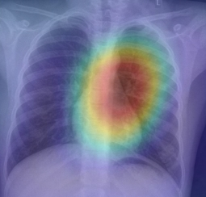

Classifying 7 types of skin lesions with explainable Grad-CAM heatmaps for early melanoma intervention.
Melanoma has a >99% survival rate if caught early. This drops to <25% once metastasized. AI eliminates the "wait-and-see" delay.
Dermatologists are scarce in underserved regions. Our lightweight B0 model runs on standard laptops, bringing expert-level screening anywhere.
By flagging suspicious lesions instantly, AI helps doctors prioritize biopsies for the most critical cases, optimizing clinical workflow.

Our EfficientNet-B0 backbone isn't just a "black box." With integrated Grad-CAM, we provide visual justifications, showing clinicians exactly which morphological features led to a specific classification.
Classifies AKIEC, BCC, BKL, DF, MEL, NV, and VASC with handled imbalanced learning.
Optimized PyTorch pipeline for real-time mobile and web-based screening via Gradio.
Human Against Machine dataset: 10,015 dermatoscopic images across seven distinct diagnostic categories.
The most lethal form; early classification is vital.
Common moles, dominating 67% of the dataset.
Non-melanocytic skin cancer with high cure rates.
Pre-cancerous lesions appearing on sun-damaged skin.